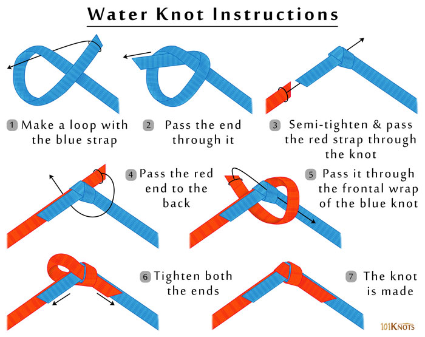

The water knot safely secures webbing, flat belts, and most types of straps together.
How to tie a water knot:
To tie the water knot, start with a loose overhand knot in the end of one strap. Pass the other strap in the opposite direction so it mirrors the route of the overhand knot on the first strap. Take the ends of the two straps and pull the knot tight. That’s it—it’s very simple and very strong.
